свой contour.py, своя серия и паспорт эксперимента
Файлы
benchmarks/ · lab.py · contour.py · METHOD.md
нажмите любую клавишу, чтобы начать ▸
01 / 35
Занятие 4 · алгоритмизация
Практические замеры времени и памяти
Занятие 3 считало операции: число сравнений не зависит ни от машины, ни от версии Python. Сегодня измеряем секунды и байты. Разберём, из каких строк состоит замер, какие часы для него годятся и почему одно измерение ничего не значит.
35 экранов4 запуска рукамирезультат — свой CSV
Что будет на экранах
Функции модуля time4
Элементов контура замера5
Размеров входа в серии6
Дефектов в чужом замере5
Все числа на экранах получены запуском файлов из course-materials/benchmarks/ на CPython 3.12.12. Кадры терминала — с этих же запусков.
04
Раздел I · задача занятия
Два решения одной задачи: сверка входящих с реестром
Пришёл пакет из n идентификаторов. Нужно посчитать, сколько из них есть в реестре известных. Оба решения дают одинаковый ответ и различаются одной строкой — тем, где хранится реестр.
match_list · проверка по списку
def match_list(registry, incoming):
known = list(registry)
return sum(1 for x in incoming
if x in known)
Проверка x in known для списка сравнивает x с элементами подряд, пока не найдёт совпадение или не дойдёт до конца. Одна проверка стоит до n сравнений, проверок n штук.
оценка занятия 3: T(n) = O(n²)
match_set · проверка по множеству
def match_set(registry, incoming):
known = set(registry)
return sum(1 for x in incoming
if x in known)
Множество хранит значения по хеш-таблице: адрес ячейки считается из самого значения, поэтому проверка не зависит от размера реестра. Одна проверка — O(1) в среднем, проверок n штук.
оценка занятия 3: T(n) = O(n)
Задача сквозная: на ней разбираются все пять элементов контура, на ней же вы проведёте свою серию. Файл с обоими решениями — benchmarks/lab.py.
I · ЗАЧЕМ ИЗМЕРЯТЬ
Раздел I · зачем нужен замер
Оценка предсказывает ×4 и ×2, замер даёт другие множители
Если T(n) = O(n²), то при удвоении n работа растёт примерно вчетверо; если O(n) — вдвое. Справа — множители, полученные запуском на шести размерах входа.
Ни одно значение не совпало с ожиданием ровно, и промахи разнонаправленные: список рос медленнее четырёх раз, множество — быстрее двух. Причины разберём на экране 25, когда будет понятно, что сам замер сделан правильно.
Удвоение n
список
множество
ожидание
250 → 500
3,91
2,07
4,00 и 2,00
500 → 1000
3,60
2,15
4,00 и 2,00
1000 → 2000
3,96
2,13
4,00 и 2,00
2000 → 4000
4,05
2,50
4,00 и 2,00
4000 → 8000
3,93
1,95
4,00 и 2,00
I · ЗАЧЕМ ИЗМЕРЯТЬ
Раздел I · определения
Оценка и замер описывают разные величины
Замер — измерение времени или памяти одного конкретного запуска программы на конкретной машине. Оценка сложности получается разбором кода и от машины не зависит; замер получается запуском и зависит от неё целиком.
T(n)
Число операций как функция размера входа. Получается счётом по коду. Единиц измерения нет.
S(n)
Дополнительная память как функция размера входа. Тоже счётом по коду, тоже без единиц.
t(n)
Время работы в секундах или микросекундах. Получается замером по часам.
m(n)
Пиковая дополнительная память в байтах. Получается замером через tracemalloc.
Вопрос
Оценка
Замер
Почему
Какое решение растёт быстрее?
да
нет
замер видит только те n, на которых запускали
Уложимся в лимит 200 мс?
нет
да
в записи O(n) секунд нет
Хватит ли 256 МБ контейнеру?
нет
да
байты на элемент считает только прибор
Какая реализация дешевле здесь?
нет
да
у решений одного класса разные постоянные расходы
I · ЗАЧЕМ ИЗМЕРЯТЬ
Раздел II · определения
Часы описываются разрешением и монотонностью
Разрешение часов — наименьший интервал, который они различают. Монотонные часы не могут пойти назад: их показания только растут. Оба свойства печатает time.get_clock_info, гадать не нужно.
benchmarks/clock_info.py · функция mainсвойства часов из самого Python
import time
for name in ("perf_counter", "process_time", "time"):
info = time.get_clock_info(name)
print(f'{name}:')
print(f' разрешение {info.resolution:.3e} с, '
f'монотонные: {info.monotonic}')
print(f' реализация {info.implementation}')
time.time() возвращает календарное время и монотонным не является: при синхронизации часов операционной системой оно может уйти назад, и разность двух отсчётов окажется отрицательной. Для интервалов оно не годится.
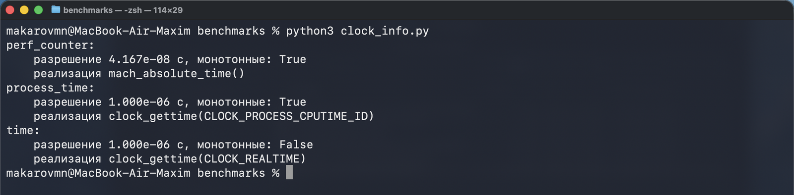
Запуск на CPython 3.12.12, macOS. perf_counter различает 4,167·10⁻⁸ с — это 41,7 наносекунды; у process_time разрешение в 24 раза грубее.
II · ЧАСЫ
Раздел II · две разные секунды
perf_counter считает ожидание, process_time — нет
Прошедшее время — сколько времени прошло по стенным часам, вместе с ожиданием. Процессорное время — сколько времени процессор выполнял именно этот процесс. Разницу видно на участке, где есть и пауза, и вычисления.
Участок: пауза плюс вычисления
def workload():
time.sleep(0.20) # процессор свободен
total = 0
for value in range(400_000): # процессор занят
total += value
return total
sleep снимает процесс с процессора на 0,2 секунды: программа стоит, но процессор в это время выполняет чужие задачи. Цикл, наоборот, занимает процессор целиком.
benchmarks/clocks.py
Два отсчёта вокруг одного участка
Часы не показывают «текущее время замера»: у perf_counter точка отсчёта вообще произвольная. Пригодна только разность двух отсчётов вокруг участка.
тот же файл, функция main
II · ЧАСЫ
Раздел II · результат запуска
0,229 секунды по одним часам и 0,024 по другим
Тот же участок, те же 400 000 сложений, один запуск. Часы разошлись на 0,205 секунды — ровно на длительность паузы.
Как читать эти три строки
0,229 с — perf_counter: пауза засчитана, потому что пользователь её ждал.
0,024 с — process_time: за время паузы процессу не досталось процессора, и часы стояли.
Отсюда правило выбора: задержка ответа измеряется perf_counter, стоимость вычислений — process_time.
Наша задача ничего не ждёт: ни сети, ни диска. Поэтому дальше берём perf_counter — у него разрешение в 24 раза лучше.
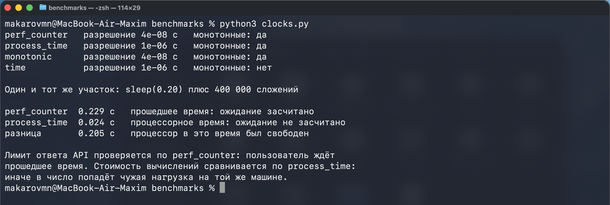
Запуск python benchmarks/clocks.py. На вашей машине секунды будут другими, разница между двумя часами останется той же.
II · ЧАСЫ
Раздел II · предел прибора
Одна проверка короче цены деления, поэтому её гоняют циклом
Проверка x in known по множеству занимает 11,1 наносекунды. Разрешение perf_counter — 41,7 наносекунды. Измерить такую операцию одним отсчётом нельзя: результат целиком состоит из погрешности прибора.
терминалмодуль timeit из стандартной библиотеки
python -m timeit -s 'known = set(range(40000)); x = 4321' \
'x in known'
python -m timeit -s 'known = list(range(40000)); x = 4321' \
'x in known'
timeit сам подбирает число повторений так, чтобы участок стал длиннее цены деления, и делит результат: 20 миллионов проверок по множеству и 10 тысяч по списку. Наш контур решает ту же задачу иначе — передаёт решению сразу пакет из n значений.
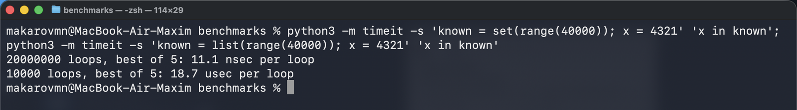
Разница между строками — 1685 раз на реестре из 40 000 значений. Это цена одной проверки; дальше мы будем измерять цену n проверок.
Выпишите свои значения perf_counter и process_time.
Вычтите одно из другого и скажите, какая строка workload дала разницу.
Уберите sleep(0.20), запустите снова и сравните результаты.
Ожидаемый результат
Без sleep значения сблизятся: участок состоит из вычислений, ждать процессу нечего. Полностью они не совпадут — часть работы процесс тратит на то, чего process_time не считает.
Повторные запуски дадут разные числа. Запомните величину расхождения: ради него дальше понадобится серия повторов.
04:00
Результат — две цифры и одно объяснение.
ЗА КЛАВИАТУРУ
Раздел III · определение
Граница замера — строки между двумя отсчётами
Граница замера — участок кода, попавший между взятием первого и второго отсчёта часов. Всё, что внутри, входит в результат; всё, что снаружи, не входит. Из этого следует правило: внутри границы остаётся только исследуемая операция.
Подготовка данных, печать и проверки выносятся наружу не из аккуратности, а потому что иначе измеряется не то. Насколько не то — видно на следующем экране, где цена каждой строки измерена отдельно.
benchmarks/lab.py · функция seriesграница выделена
registry, incoming = make_data(size) данные готовы заранее
func(registry[:32], incoming[:32]) прогрев
gc.collect() сборка мусора до отсчёта
start = time.perf_counter() ← отсчёт открыт
func(registry, incoming) исследуемая операция
value = (time.perf_counter() ← отсчёт закрыт
- start) * 1e6 секунды → микросекунды
III · ГРАНИЦА
Раздел III · цена каждой строки
Цена строк одного участка различается в пятнадцать тысяч раз
Режим --boundary в lab.py измеряет каждую часть участка отдельно, по семь повторов. При n = 4000 получилось так:
Строка участка
Что делает
мкс
make_data(4000)
готовит реестр и пакет входящих
1214,5
list(registry)
копирует список
4,3
set(registry)
строит хеш-таблицу
53,0
x in known · список
сверяет 4000 значений перебором
67 201,8
x in known · множество
сверяет те же 4000 по таблице
66,4
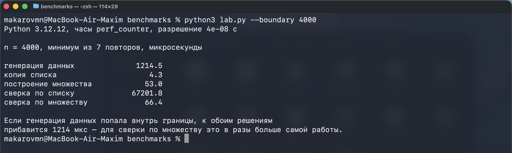
Запуск python benchmarks/lab.py --boundary 4000. Генерация данных дороже сверки по множеству в 18 раз: попади она внутрь границы, оба решения получили бы одинаковую надбавку в 1214 мкс.
III · ГРАНИЦА
Раздел III · та же программа, разные границы
Один и тот же код измеряется как 66 или как 1335 микросекунд
Строки листинга кликаются: первый клик ставит начало участка, второй — конец. Число справа складывается из цены выбранных строк, измеренной на предыдущем экране.
bench.py · n = 4000кликните строку, чтобы задать границу
registry, incoming = make_data(4000)1214,5
known = set(registry)53,0
found = 00,0
for x in incoming:66,4
if x in known:—
found += 1—
print(f"совпадений {found}")1,3
Строки 5 и 6 — тело цикла, их стоимость уже посчитана в строке 4. Результат работы: 384 совпадения из 4000 входящих.
Внутри границы
66,4мксстроки 4–6
Граница поставлена верно. Внутри только сверка. Именно это число сравнивают с 67 201,8 мкс у перебора по списку — разница в 1012 раз.
III · ГРАНИЦА
Раздел III · три ошибки, которые не видны по выводу программы
Ошибка в границе не роняет программу и не печатает трассировку
К обоим решениям прибавляется 1214,5 мкс. Сверка по множеству растёт с 66,4 до 1280,9 — в девятнадцать раз, — а по списку с 67 201,8 до 68 416,3, то есть на 2%. Разница между решениями схлопывается с 1012 до 53 раз.
симптом: решения подозрительно близки
Печать внутри границы
Печать одной строки в это окно терминала стоила 1,3 мкс — 2% от сверки по множеству. При выводе в файл будет одно число, при прокрутке в редакторе — другое. Замер начинает зависеть от того, куда смотрит вывод.
симптом: разброс серии скачет
Разные границы у решений
# у первого внутри только цикл
start = ...; sum(1 for x in incoming
if x in known)
# у второго внутри ещё и подготовка
start = ...; known = set(registry)
sum(...)
Оба числа верные, но отвечают на разные вопросы. Сравнение циклов даёт 1012×, сравнение решений целиком — 563×. Пока граница не названа словами, обе цифры недоказуемы.
симптом: находится только чтением кода
III · ГРАНИЦА
За клавиатуру · измерительный контур · 8 минут
Соберите контур и доведите тесты до зелёного
Что написать в contour.py
make_data(size, seed) — два списка длины size из random.Random(seed).
series(...) — один прогрев на срезах [:32], затем цикл повторов с отсчётом вокруг единственного вызова.
summarize(...) — словарь с ключами min, median, mean, max, spread.
Тесты проверяют не микросекунды, а устройство контура: данные повторяются при одном seed, генерация остаётся снаружи границы, значений в серии ровно столько, сколько повторов.
08:00
Готово, когда все семь тестов зелёные.
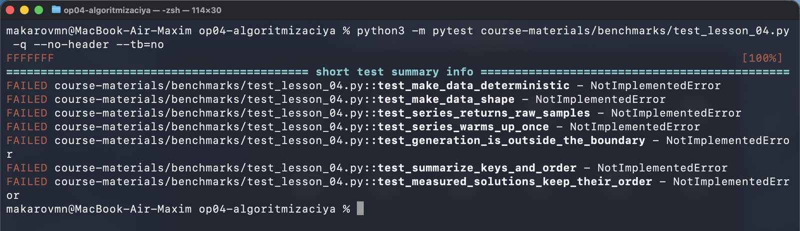
Начало: в бланке стоят NotImplementedError, падают все семь тестов.
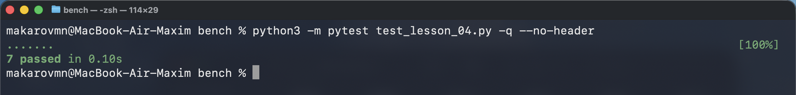
Конец. Красный тест читайте по имени — оно называет нарушенное правило.
ЗА КЛАВИАТУРУ
Раздел III · разбор падения теста
Генерация внутри границы ловится одним числом
Слева — series, написанная почти правильно: данные создаются заново на каждом повторе, внутри отсчёта. Программа работает и печатает правдоподобные числа.
Как это ловит тест
Тест измеряет решение, которое не делает ничего: lambda a, b: None. При верной границе оно обязано стоить единицы микросекунд.
Получилось 1343,7 мкс при цене генерации 2698,1. Значит, внутри границы лежит make_data.
Остальные шесть тестов проходят: серия стабильна, агрегаты считаются верно, данные повторяются.
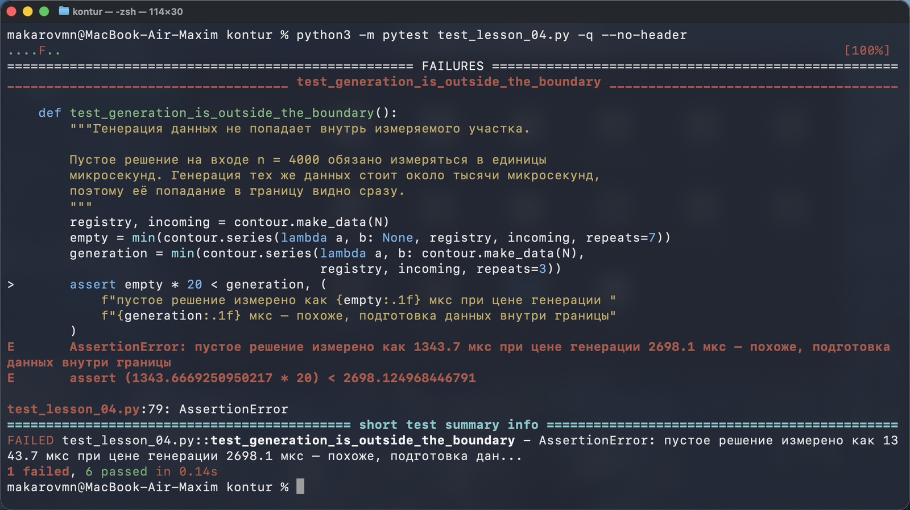
Сообщение падения называет не строку кода, а нарушенное правило методики.
III · ГРАНИЦА
Раздел IV · определение
Прогрев — вызов решения до начала серии
Прогрев — один вызов измеряемой функции до первого отсчёта. Он нужен потому, что первый вызов оплачивает разовые расходы: заполнение кэшей процессора, подготовку внутренних структур интерпретатора, первое выделение памяти. В следующих вызовах эти расходы уже не повторяются.
Десять вызовов match_set подряд, n = 1000
мкс
вызов 1
34,8
минимум вызовов 2–10
21,1
медиана вызовов 2–10
22,4
надбавка первого вызова
13,7
benchmarks/lab.pyпрогрев — одна строка перед серией
WARMUP_SIZE = 32
def series(func, registry, incoming, repeats):
func(registry[:32], incoming[:32]) прогрев
samples = []
for _ in range(repeats):
...
Прогрев идёт на срезах в 32 элемента, а не на полных данных: разовые расходы он оплачивает те же, а времени тратит в тридцать раз меньше. Значение прогрева нигде не сохраняется — оно не входит в серию.
IV · СЕРИЯ
Раздел IV · определение и разбор функции
Серия — повторы одного замера на одних данных
Серия — несколько измерений одного и того же участка без изменения кода и входа. Она нужна, потому что одно значение включает случайные помехи: планировщик отдаёт процессор другим программам, срабатывает сборщик мусора, вытесняются кэши.
Разбор по строкам
1 прогрев на коротком входе, его значение не сохраняется.
3gc.collect() до отсчёта: сборщик отработает сейчас, а не внутри границы.
4–6 отсчёт, единственный вызов решения, второй отсчёт.
7 в список идёт сырое значение повтора, а не готовое среднее.
Функция возвращает список из repeats чисел. Сворачивать его в одно — работа отдельной функции, и это следующий экран.
IV · СЕРИЯ
Раздел IV · определение
Агрегат сворачивает серию в одно число, разброс говорит, верить ли ему
Разброс — отношение максимума серии к минимуму. Значение около 1,1 означает спокойную машину, 2 и больше — что замер надо повторить: на таком фоне разница между близкими решениями не видна.
benchmarks/lab.py · функция summarizeчетыре агрегата и разброс
В таблицу занятия идёт минимум: помехи умеют только замедлять, поэтому самый быстрый повтор ближе всех к стоимости кода без помех. Рядом всегда печатается разброс — без него минимум ничем не подтверждён.
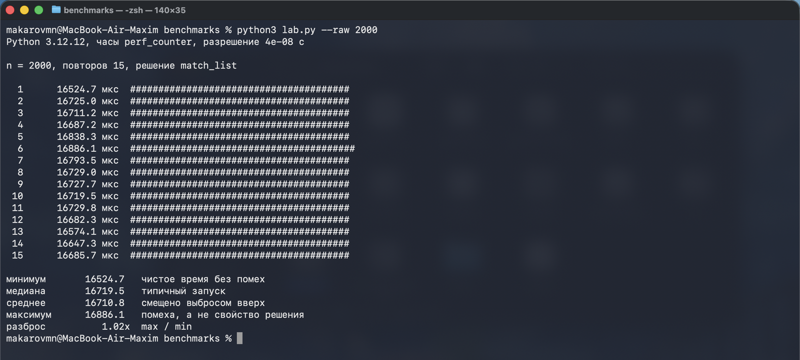
Пятнадцать повторов одного вызова при n = 2000: от 16 524,7 до 16 886,1 мкс. Код и вход не менялись, разброс — 1,02.
IV · СЕРИЯ
Раздел V · определения
Пиковая дополнительная память — максимум за время участка
Дополнительная память — то, что решение создало само: множество, копия списка, кадры стека у рекурсии. Вход в неё не входит, он существовал до вызова. Пиковая — наибольшее значение дополнительной памяти внутри границы. По ней подбирают лимит контейнера.
start
включает трассировку выделений Python
reset_peak
обнуляет пик, чтобы в него не попало прошлое
get_traced_memory
возвращает пару «текущая, пиковая» в байтах
tracemalloc замедляет программу в несколько раз, поэтому время и память измеряются разными запусками. Считает он только выделения Python внутри участка: память интерпретатора и расширений на C в число не входят, и оно меньше, чем показывает диспетчер задач.
benchmarks/memory_probe.pyзамер пиковой памяти одного вызова
Данные созданы до start, поэтому вход в число не попадает. Граница здесь такая же, как у времени: внутри только вызов решения.
V · ПАМЯТЬ
Раздел V · результат запуска
Список: 8 байт на элемент, множество: от 41 до 82
Копия списка хранит указатели по 8 байт плюс заголовок, поэтому байты на элемент почти не меняются: 9,0 → 8,1. У множества то же число скачет между 41 и 82 — при одинаковом устройстве данных.
n
список
множество
байт на элемент
500
4 512
41 264
9,0 и 82,5
1000
8 512
41 264
8,5 и 41,3
2000
16 512
164 144
8,3 и 82,1
4000
32 512
164 144
8,1 и 41,0
8000
64 512
655 664
8,1 и 82,0
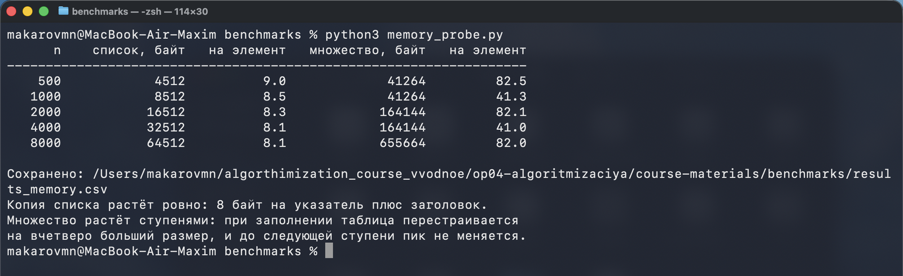
Запуск python benchmarks/memory_probe.py. Байты, в отличие от микросекунд, от запуска к запуску не плавают: tracemalloc считает выделения, а не время.
V · ПАМЯТЬ
Раздел V · почему множество растёт ступенями
Хеш-таблица перестраивается вчетверо и стоит на месте до следующего порога
Множество держит значения в таблице ячеек. Пока заполнено меньше двух третей, новые значения кладутся в свободные ячейки, и памяти нужно столько же. Как только порог пройден, создаётся таблица вчетверо большего размера, и всё переносится в неё.
Вход вырос вдвое, пиковая память не изменилась: обе тысячи значений помещаются в уже выделенную таблицу. Байты на элемент падают с 82,5 до 41,3 — не потому, что решение стало экономнее.
ступень держится до порога заполнения
n = 2000 — перестройка
Порог пройден: 164 144 / 41 264 = 3,98 — таблица выросла ровно вчетверо. Пик включает и старую таблицу, и новую: во время переноса они существуют одновременно.
скачок не зависит от того, сколько значений добавлено
Что из этого следует для отчёта
# отношение множество / список
# 500 → 9,15 2000 → 9,94
# 1000 → 4,85 4000 → 5,05
# 8000 → 10,16
Отношение гуляет вдвое в зависимости от того, где между ступенями оказался ваш n. Асимптотически это по-прежнему S(n) = O(n), но переносить измеренные байты на другой размер входа линейно нельзя.
Дождитесь конца серии: n = 8000 считается ощутимо дольше остальных.
В нижней таблице сравните свои множители роста с 4,00 и 2,00.
Найдите размер входа, на котором ваш разброс оказался наибольшим, и объясните, почему именно он.
Ваши микросекунды будут другими. Сходиться должны форма роста и порядок величин, а не значения.
06:00
Результат — свой results_time.csv.
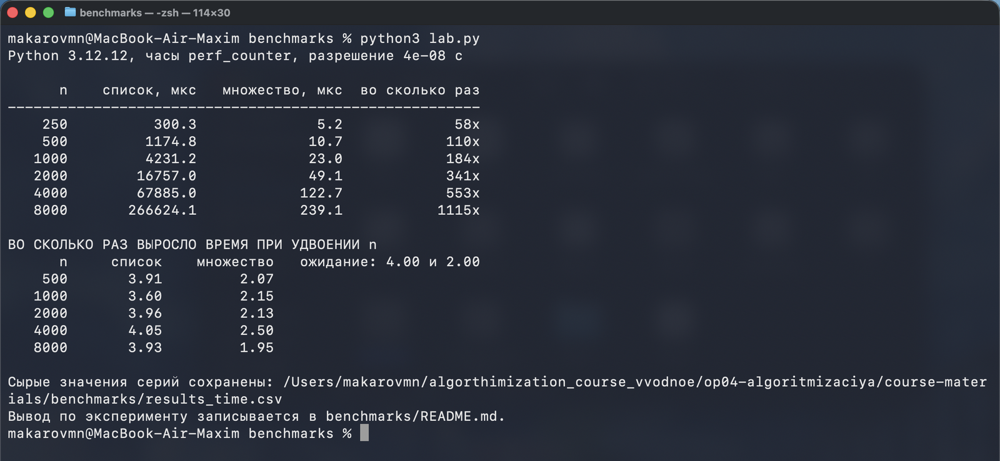
Верхняя таблица — минимум серии для двух решений и отношение между ними. Нижняя — во сколько раз выросло время при удвоении входа.
ЗА КЛАВИАТУРУ
Раздел VI · что сохраняется на диск
В CSV идут одиннадцать столбцов, а не итоговый коэффициент
Таблица в терминале живёт до закрытия окна. В репозиторий кладётся файл, по которому чужой человек может проверить ваши рассуждения.
Столбец
Что в нём
Зачем
n, repeats
размер входа, число повторов
без них вывод нельзя ни повторить, ни ограничить
*_min_us
минимум серии
оценка стоимости решения без помех
*_median_us
медиана серии
расхождение с минимумом видно сразу
*_spread
максимум / минимум
показывает, верить ли строке
*_growth
рост при удвоении n
сравнивается с ожиданием 4,00 и 2,00
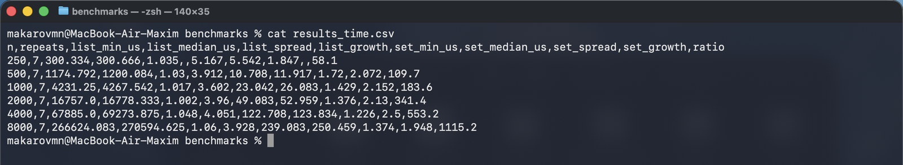
Шесть строк — шесть размеров входа. Пустые поля growth в первой строке не ошибка: предыдущего размера ещё нет, удваивать нечего.
VI · СВОИ ДАННЫЕ
Раздел VI · серия целиком
Шесть размеров входа: от 58 до 1115 раз разницы
n
список, мкс
медиана
множество, мкс
разброс
во сколько раз
250
300,3
300,7
5,2
1,04
58
500
1 174,8
1 200,1
10,7
1,03
110
1000
4 231,2
4 267,5
23,0
1,02
184
2000
16 757,0
16 778,3
49,1
1,00
341
4000
67 885,0
69 273,9
122,7
1,05
553
8000
266 624,1
270 594,6
239,1
1,06
1115
Разброс у списка держится около 1,0: участок длинный, помеха на его фоне незаметна. У множества при n = 250 он доходит до 1,85 — работа занимает 5 микросекунд, и любая задержка видна целиком. Отсюда правило: чем короче измеряемый участок, тем больше повторов ему нужно.
VI · СВОИ ДАННЫЕ
Раздел VI · возврат к экрану 3
Почему множители не совпали с ×4 и ×2
На логарифмических осях степенная зависимость рисуется прямой, а показатель степени становится её наклоном. Наклон считается по крайним точкам: время выросло в 887,8 раза при росте входа в 32 раза, значит log₂887,8 / log₂32 = 1,96.
Две причины расхождения
3,60 вместо 4,00. Кроме квадратичного цикла в решении есть копирование list(registry) и постоянные расходы на вызов. Их доля падает с ростом n, поэтому множитель подтягивается к четырём: 3,60 → 3,96 → 4,05.
2,50 вместо 2,00.O(1) в среднем не обещает одинаковое число наносекунд на проверку: таблица перестраивается ступенями, меняется работа кэша. Наклон вышел 1,11 вместо 1,00.
Оценка описывает старшее слагаемое, замер — всё время целиком. Расхождение такого масштаба — не ошибка оценки.
results_time.csvминимум серии, мкс
Точки — замеры, линии проведены по ним. Вертикальная ось сжата логарифмом, поэтому разрыв в 1115 раз выглядит на глаз скромно.
VI · СВОИ ДАННЫЕ
Раздел VI · время против памяти
При n = 8000 множество быстрее в 1115 раз и дороже по памяти в 10,2
655 664 байта против 64 512. Числа получены разными приборами и разными запусками: perf_counter для времени, tracemalloc для памяти.
Переносить их на вход в тысячу раз больше нельзя — ни по времени, ни по памяти. Для нового диапазона проводится отдельная серия.
Как это формулируется на защите
Для диапазона 250–8000 беру множество: замер на n = 8000 дал выигрыш 1115× по минимуму серии из семи повторов. Цена — 655 664 байта пиковой дополнительной памяти против 64 512 у списка. Перед переносом на больший вход повторю замер.
Названы диапазон, метрика, способ замера, цена и условие проверки.
VI · СВОИ ДАННЫЕ
За клавиатуру · чужой замер · 6 минут
Найдите пять дефектов рабочего замера
Что сделать
Запустите файл и зафиксируйте вывод: он каждый раз разный.
Пройдите по элементам контура — данные, граница, прогрев, серия, агрегат — и по часам. Каждый нарушен ровно одним местом в коде.
Скажите, почему 13,7× нельзя сравнивать со 190× из честного замера.
Начните со строк «совпадений»: у решений они разные — 96 и 109 при n = 1000. Значит, решениям достались разные данные.
06:00
Ответ — пять строк «дефект → искажение → исправление».
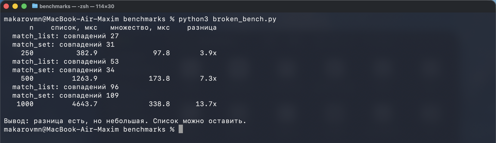
Программа отработала без ошибок, таблица заполнена, вывод сформулирован. Все три числа неверны.
ЗА КЛАВИАТУРУ
Раздел VII · разбор
Пять дефектов и их цена
Как в broken_bench.py
Как в контуре
Что искажает
make_data(size) без seed, отдельно для каждого решения
make_data(size, seed=42), один вход на оба
96 совпадений против 109 — входы разные
make_data внутри отсчёта
данные готовы до start
к обоим решениям добавлена тысяча микросекунд
прогрева нет
func(registry[:32], …)
разовые расходы попадают в результат
один запуск
for _ in range(repeats)
разброс неизвестен, стабильность оценить нечем
time.time()
time.perf_counter()
календарные часы не монотонны и грубее в 24 раза
Пятый дефект на этих числах себя не проявил: часы назад не ушли. Дефект методики опасен не тем, что портит каждый запуск, а тем, что может испортить любой — и заранее неизвестно какой.
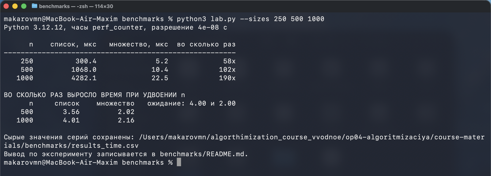
Те же n = 250, 500 и 1000, контур собран правильно: python benchmarks/lab.py --sizes 250 500 1000. Вместо 3,9 · 7,3 · 13,7 получилось 58 · 102 · 190.
VII · ДЕФЕКТЫ
Контроль · приёмка чужой методики · 4 минуты
Принять или вернуть отчёт другой группы
Отчёт на приёмку · peer_review_report.md
Методика. Запустили оба решения, засекли
время секундомером телефона, взяли среднее
из двух запусков. Данные для каждого решения
сгенерировали заново, чтобы замер был честным.
Измеряли на n = 100, чтобы дождаться результата.
Среда. Ноутбук, Python.
решение запуск 1 запуск 2 среднее
список 0.4 0.9 0.65
множество 0.3 0.5 0.40
Вывод. Множество быстрее примерно в полтора
раза. Разница небольшая, можно оставить список.
На больших данных всё будет так же.
Четыре пункта ответа
Назвать дефекты и элемент контура, нарушенный каждым.
Сказать, какой исказил число сильнее прочих.
Переписать вывод так, чтобы он следовал из имеющихся данных.
Назвать замер, которым исходный вывод можно проверить.
Принимается, если названо не меньше пяти дефектов и переписанный вывод не выходит за пределы n = 100.
04:00
Отвечает группа, которая отчёт не писала.
КОНТРОЛЬ
Итог · требования к формулировке результата
Вывод замера состоит из четырёх частей
на чём измерено
Данные и размеры входа. Без них вывод нельзя ни повторить, ни ограничить.
что получилось
Во сколько раз и по какой метрике. «Быстрее» без числа и метрики — не результат.
Размеры входа, данные и машины, на которых не проверяли.
На пакетах из 250–8000 идентификаторов сверка через множество оказалась от 58 до 1115 раз быстрее перебора по списку по минимуму серии из семи повторов; измерено perf_counter с прогревом, генерация данных вынесена за границу, разброс серий от 1,00 до 1,85; вывод не распространяется на пакеты меньше 250 элементов, на данные с другим распределением совпадений и на машины с другим объёмом кэша.
В формулировке «множество работает быстрее» нет ни одной из четырёх частей: её нельзя ни проверить, ни опровергнуть.
ИТОГ
Справка · проходится по своему коду до первого числа
Десять проверок перед первым числом
Данные созданы до отсчёта и одинаковы для всех решений
Внутри границы только исследуемая операция: без генерации, печати и проверок
Часы монотонные: perf_counter, а не time
Участок длиннее разрешения часов хотя бы в сотни раз
Перед серией сделан прогрев, и его значение в серию не попало
Повторов не меньше семи, все сырые значения сохранены
В отчёте есть минимум, медиана и разброс max / min
Размеров входа не меньше четырёх, и они растут кратно
Память измерена отдельным запуском, не одновременно со временем
Названы среда и размер входа, при котором вывод перестаёт действовать
Паспорт эксперимента добавляет к списку вопрос, гипотезу и ограничения вывода. Полный шаблон из одиннадцати полей — в METHOD.md.
СПРАВКА
Вопрос на выход
Коллега прислал число: «решение работает 40 миллисекунд». Какие четыре вопроса вы зададите до того, как ему поверить?
Ответ засчитывается, если названы граница участка, число повторов и агрегат, размер входа и среда. Пятым можно спросить разброс — по нему видно, стоит ли обсуждать остальное.
ИТОГ
Фиксация · что уходит в репозиторий
В коммит идут сырые значения, а не один коэффициент
По записи «в 184 раза быстрее» нельзя проверить ни границу, ни повторы, ни разброс. Поэтому в репозиторий кладётся то, из чего это число получено.
benchmarks/артефакт занятия
benchmarks/
├── contour.py заполненный бланк контура
├── results_time.csv сырые серии со своими числами
├── chart.svg график «размер входа — время»
└── README.md паспорт по METHOD.md
Git по КТП
Issuemeasurement-baseline: вопрос и гипотеза, записанные до первого запуска.
Веткаlesson-04, коммит с заполненным contour.py и своим CSV.
Pull Request с паспортом эксперимента в описании: одиннадцать полей, раздел «ограничения» обязателен.
Review: один комментарий по чужой методике по чек-листу контура — конкретный пункт, который в чужом отчёте не закрыт.
ФИКСАЦИЯ
Домашнее задание № 4 · к следующему занятию
Максим Николаевич не хочет задавать домашнее задание. Но очень хочет
①
Проверить свою прикидку из ДЗ № 3
Вы считали, сколько сравнений сделает two_sum перебором при n = 100 000. Измерьте своим контуром на четырёх размерах входа и скажите, сошлась прикидка или нет.
②
Собрать паспорт эксперимента
Одиннадцать полей по METHOD.md. В разделе «ограничения» назовите размер входа, дальше которого ваш вывод не действует.
③
Измерить память двух версий
Замерьте tracemalloc обе версии two_sum и скажите, при каком лимите контейнера пришлось бы вернуться к перебору. Расчётом от байтов на элемент, а не подбором.
ДЗ
Домашнее задание № 4 · порядок сдачи
Куда положить и как сдать
Файлы
benchmarks/ в личном репозитории: contour.py, results_time.csv, README.md с паспортом.
Ветка и PR
Ветка hw-04, коммит с содержательным сообщением, Pull Request в собственную main.
Срок
До начала занятия 5. Один коэффициент без сырых значений не принимается.
Критерии
Одиннадцать полей паспорта, четыре размера входа, разброс в каждой серии, названные ограничения.
Про ИИ: замер, паспорт и ограничения пишете сами — в этом и состоит задание. Оформление .md и причёсывание формулировок можно поручить модели. Я сам так делаю всегда, поэтому и вам запрещать не буду. Содержание должно остаться вашим: методику вы будете защищать на приёмке.
ДЗ
файл
"""Бланк измерительного контура · занятие 4.
Заполняется на паре. Готовый контур лежит рядом в `lab.py`, но списать
его не получится: тест проверяет не текст, а поведение — сколько раз
вызвана функция, что попало внутрь границы и сколько значений в серии.
Что нужно написать:
make_data(size, seed) одинаковые данные для всех решений;
series(...) прогрев, повторы, сырые значения;
summarize(samples) четыре агрегата и разброс.
Проверка:
pytest course-materials/benchmarks/test_lesson_04.py -q
"""
import random
import statistics
import time
SEED = 42
WARMUP_SIZE = 32
def make_data(size, seed=SEED):
"""Реестр и пакет входящих одинаковой длины.
Два вызова с одним seed обязаны вернуть одинаковые данные: иначе
решения сравниваются на разных входах и разница во времени
объясняется не решением, а данными.
"""
# TODO: создать генератор random.Random(seed) и вернуть два списка
# длины size со значениями из диапазона range(size * 10).
raise NotImplementedError
def series(func, registry, incoming, repeats=7):
"""Сырые значения серии в микросекундах, по одному на повтор.
Требования, которые проверяет тест:
1. перед серией делается ровно один прогревочный вызов на коротком
входе — итого функция вызывается repeats + 1 раз;
2. внутри границы находится только вызов func: подготовка данных,
печать и агрегация остаются снаружи;
3. возвращается список сырых значений, а не готовое среднее.
"""
# TODO: прогрев на срезах длиной WARMUP_SIZE, затем цикл повторов
# с time.perf_counter() вокруг единственного вызова func.
raise NotImplementedError
def summarize(samples):
"""Словарь с ключами min, median, mean, max, spread.
spread — отношение максимума к минимуму. Он показывает, насколько
серия зашумлена: значение около 1.1 означает спокойную машину,
значение 2 и больше — что замер надо повторить.
"""
# TODO: собрать словарь из min, statistics.median, statistics.mean,
# max и отношения max / min.
raise NotImplementedError
"""Автопроверка измерительного контура · занятие 4.
Тест проверяет не совпадение чисел — они у каждого свои, — а устройство
контура. Проверяется поведение: сколько раз вызвано решение, что попало
внутрь границы, сколько сырых значений вернулось из серии.
Запуск из корня репозитория:
pytest course-materials/benchmarks/test_lesson_04.py -q
Числа времени в тестах намеренно свободные: на медленной машине контур
тоже обязан быть правильным. Проверяется соотношение величин, а не
абсолютные микросекунды.
"""
import statistics
import pytest
import contour
N = 4000
def make_spy():
"""Считает вызовы и запоминает длину входа каждого вызова."""
calls = []
def spy(registry, incoming):
calls.append(len(registry))
return len(registry)
return spy, calls
def test_make_data_deterministic():
"""Один seed — одни данные. Иначе решения сравниваются на разных входах."""
first = contour.make_data(1000, seed=1)
second = contour.make_data(1000, seed=1)
assert first == second
def test_make_data_shape():
registry, incoming = contour.make_data(500)
assert len(registry) == len(incoming) == 500
assert all(isinstance(value, int) for value in registry[:10])
def test_series_returns_raw_samples():
"""Из серии возвращаются сырые значения, по одному на повтор."""
registry, incoming = contour.make_data(200)
samples = contour.series(lambda a, b: None, registry, incoming, repeats=9)
assert isinstance(samples, list)
assert len(samples) == 9
assert all(value >= 0 for value in samples)
def test_series_warms_up_once():
"""Прогрев обязателен и ровно один: всего repeats + 1 вызовов."""
registry, incoming = contour.make_data(200)
spy, calls = make_spy()
contour.series(spy, registry, incoming, repeats=7)
assert len(calls) == 8, (
f"решение вызвано {len(calls)} раз; ожидалось 7 повторов плюс один прогрев"
)
assert calls[0] < calls[1], "прогрев делается на коротком входе, а не на полном"
def test_generation_is_outside_the_boundary():
"""Генерация данных не попадает внутрь измеряемого участка.
Пустое решение на входе n = 4000 обязано измеряться в единицы
микросекунд. Генерация тех же данных стоит около тысячи микросекунд,
поэтому её попадание в границу видно сразу.
"""
registry, incoming = contour.make_data(N)
empty = min(contour.series(lambda a, b: None, registry, incoming, repeats=7))
generation = min(contour.series(lambda a, b: contour.make_data(N),
registry, incoming, repeats=3))
assert empty * 20 < generation, (
f"пустое решение измерено как {empty:.1f} мкс при цене генерации "
f"{generation:.1f} мкс — похоже, подготовка данных внутри границы"
)
def test_summarize_keys_and_order():
samples = [12.0, 10.0, 11.0, 30.0]
stats = contour.summarize(samples)
for key in ("min", "median", "mean", "max", "spread"):
assert key in stats, f"в агрегате нет ключа {key}"
assert stats["min"] == 10.0
assert stats["max"] == 30.0
assert stats["median"] == statistics.median(samples)
assert stats["min"] <= stats["median"] <= stats["max"]
assert stats["spread"] == pytest.approx(3.0)
def test_measured_solutions_keep_their_order():
"""Контур обязан различать два решения на достаточно большом входе."""
from lab import match_list, match_set
registry, incoming = contour.make_data(2000)
slow = min(contour.series(match_list, registry, incoming, repeats=5))
fast = min(contour.series(match_set, registry, incoming, repeats=5))
assert fast * 10 < slow, (
f"сверка по множеству измерена как {fast:.1f} мкс, по списку — "
f"{slow:.1f} мкс; при n = 2000 разница обязана быть в разы"
)
"""Чужой замер, который врёт · занятие 4.
Этот скрипт запускается и печатает правдоподобную таблицу. Числа в ней
неверные: в контуре измерения пять дефектов. Код работает, ошибок не
выдаёт, вывод выглядит убедительно — тем он и опасен.
Задание: найти все пять, исправить и показать, как изменился вывод.
Правильные числа получаются запуском `lab.py` на тех же размерах.
Подсказка о масштабе расхождения: честный замер при n = 1000 даёт
разницу около 180 раз, этот скрипт — около 13. Вывод «разница невелика,
можно оставить список» сделан по испорченному измерению.
Запуск:
python benchmarks/broken_bench.py
"""
import random
import time
def make_data(size):
registry = [random.randrange(size * 10) for _ in range(size)]
incoming = [random.randrange(size * 10) for _ in range(size)]
return registry, incoming
def match_list(registry, incoming):
known = list(registry)
return sum(1 for x in incoming if x in known)
def match_set(registry, incoming):
known = set(registry)
return sum(1 for x in incoming if x in known)
def measure(func, size):
start = time.time()
registry, incoming = make_data(size)
found = func(registry, incoming)
print(f" {func.__name__}: совпадений {found}")
return (time.time() - start) * 1e6
def main():
print(f"{'n':>7} {'список, мкс':>14} {'множество, мкс':>16} {'разница':>10}")
for size in (250, 500, 1000):
t_list = measure(match_list, size)
t_set = measure(match_set, size)
print(f"{size:>7} {t_list:>14.1f} {t_set:>16.1f} {t_list / t_set:>9.1f}x")
print("\nВывод: разница есть, но небольшая. Список можно оставить.")
if __name__ == "__main__":
main()
ОП.04 · Основы алгоритмизации и программирования · 3 курс
Домашнее задание № 4
Занятие 4 — практические замеры времени и памяти
А/П
Максим Николаевич не хочет задавать вам домашнее задание. Но очень хочет.
Что нужно сделать
Проверить прикидку из ДЗ № 3. В прошлый раз вы посчитали, сколько сравнений сделает ваше решение two_sum перебором при n = 100 000, и сказали, укладывается ли оно в секунду. Теперь измерьте его своим контуром из contour.py на четырёх размерах входа, растущих кратно, и скажите, сошлась прикидка с замером или нет. Если не сошлась — назовите причину: младшие слагаемые, кэш, стоимость одной операции в Python.
Собрать паспорт эксперимента. Одиннадцать полей по METHOD.md: вопрос, гипотеза, что сравниваем, данные, граница, часы, прогрев, повторы, агрегат, среда, ограничения. Раздел «ограничения» не формальность: назовите размер входа, дальше которого ваш вывод не действует, и объясните почему.
Ответить на вопрос, который на занятии не разбирался. Измерьте память обеих версий two_sum — перебором и через словарь — и скажите, при каком лимите памяти контейнера пришлось бы вернуться к перебору. Ответ расчётом от измеренных байтов на элемент, а не подбором.
В работу идут сырые значения, а не итоговый коэффициент. Один запуск без повторов, без прогрева и без указанной границы не принимается — ровно то, что мы разбирали на broken_bench.py.
Как сдавать
Файлы
Папка benchmarks/ в личном репозитории курса: contour.py с заполненным контуром, results_time.csv со своими сериями, README.md с паспортом эксперимента. График chart.svg — по желанию.
Ветка и PR
Ветка hw-04, коммит с понятным сообщением, затем Pull Request в свою main. В описании PR — паспорт эксперимента целиком. Merge делаете сами после проверки.
Срок
До начала занятия 5.
Проверяем
Одиннадцать полей паспорта, не меньше четырёх размеров входа, разброс max / min в каждой серии, названные ограничения вывода и расчёт по памяти.
ИИ
Замер, паспорт и ограничения пишете сами — это и есть задание. Дальше можно попросить модель причесать текст и оформить .md файл. Я сам так делаю всегда, поэтому и вам запрещать не буду. Важно, чтобы содержание осталось вашим: методику вы будете защищать на приёмке.
Словарь занятия
Граница замера
Строки, попавшие внутрь измеряемого участка. Всё, что не является исследуемой операцией, остаётся снаружи: генерация данных, печать, проверки.
Прогрев
Вызов решения до серии. Оплачивает разовые расходы — подготовку кадра вызова, выделение памяти, заполнение кэша, — которые дальше не повторяются.
Серия и разброс
Несколько повторов одного замера и отношение max / min внутри них. Разброс показывает, насколько числу можно верить: до 1,2 серия годится, больше 2 — замер повторяют.
Минимум серии
Оценка чистой стоимости кода: помехи умеют только замедлять, поэтому минимум ближе всего к работе без помех.
Медиана серии
Типичный запуск. Берётся, когда вопрос про то, что увидит пользователь, а не про сравнение двух реализаций.
perf_counter
Монотонные часы Python с наибольшим разрешением. Показывают прошедшее время, включая ожидание. Точка отсчёта произвольная, поэтому годятся только для разностей.
process_time
Процессорное время процесса. Ожидание не засчитывает: sleep(0.20) добавляет к perf_counter 0,2 секунды и к process_time — ноль.
tracemalloc
Прибор для памяти. Считает блоки, запрошенные аллокатором Python внутри трассируемого участка; память интерпретатора и расширений на C не считает.
Пиковая память
Максимум дополнительной памяти за время участка. По ней подбирают лимит контейнера, а не по текущей.
Паспорт эксперимента
Одиннадцать полей, при которых замер можно повторить и проверить. Число без паспорта в review не принимается.
Материалы занятия — в course-materials/benchmarks/. Вопросы по заданию — на паре или в чате группы.